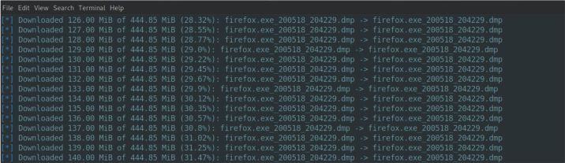

Procdump: Herramienta para volcar memoria
Al trabajar con sistemas Windows, es importante saber que no todo son exploits, y con ello en mente es posible hacer uso de herramientas del propio sistema.
26 February 2018

Al trabajar con sistemas Windows, es importante saber que no todo son exploits, y con ello en mente es posible hacer uso de herramientas del propio sistema. En esta ocasión esta herramienta nos va a permitir realizar un volcado de memoria y obeter algunas credenciales.
ProcDump
El uso de esta herramiente es demasiado sencillo. Con una consola remota (ej. Meterpreter) y el programa en el equipo víctima, es necesario obtener un listado de los programas que estén corriendo en el ordenador. Solo necesitamos el ID del proceso del programa a volcar.
tasklist
Luego de haber localizado el ID deseado, podremos usar el ProcDump para volcar la memoria:
procdump.exe -ma PID
Lo anterior nos generará un archivo .dmp con la información que necesitamos. Una vez se tiene ese archivo, se puede filtrar la información para obtener los datos.
***NOTA: Es posible visualizar el archivo con un editor de texto o con el comando (aplica GNU/Linux):
strings -td [ruta/del/archivo]
Podemos pasar la información del archivo a un archivo de texto para posteriormente analizarlo. Una de las formas es utilizar el ya afamado comando "grep" a fin de filtrar la información. Algo interesante puede ser filtrar por la palabra "Passwd".
De igual forma su uso no se limita a obtener información comprometedora. Es de igual forma importante cuando se necesita hacer un servicio post-portem (ej. Al buscar la llave de cifrado de un ransomware).